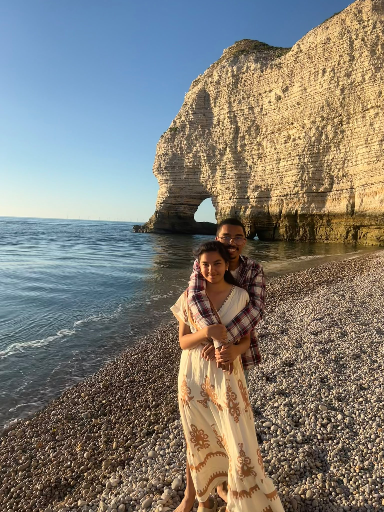
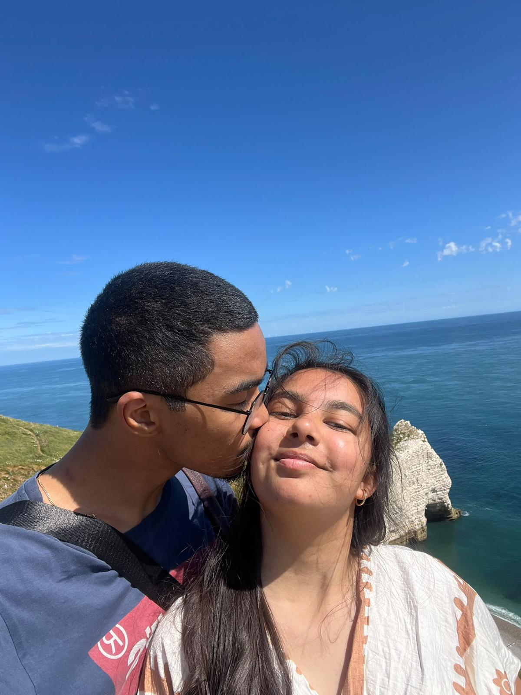
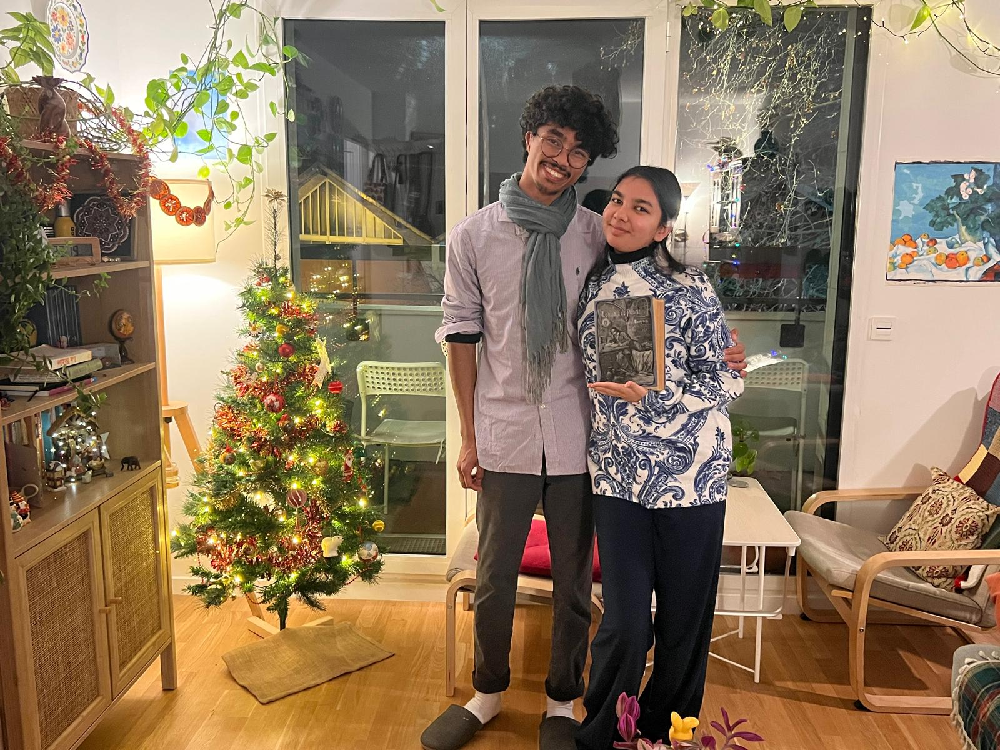

I
&
E
Français
English
IANJA & ELIZA
Notre foi, notre mariage

Un souvenir à Étretat

Un instant à deux

La joie d’être ensemble
Activez JavaScript pour lire le chapitre en français ou en anglais. / Enable JavaScript to read the chapter in French or English.
Retour à l’accueil